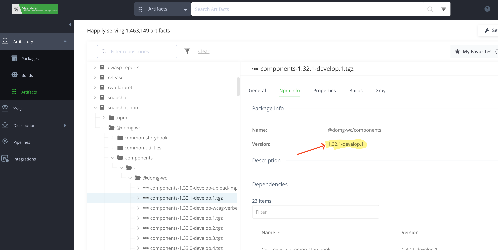

Vanaf versie 1.16, worden er snapshot releases gemaakt voor alle branches die beginnen met
develop-.
Hoe versie nummers worden opgebouwd.
Deze snapshot releases worden automatisch gegenereerd bij elke push naar een develop branch conform semantic versioning.
Naamgeving is als volgt: 1.34.2-develop.3, waarbij:
- 1 het major versienummer is
- 34 het minor versienummer (wordt verhoogd elke release met 1 of meer commits zijn met prefix `feat:` of gelijkwaardig)
- 2 het patch versienummer (wordt verhoogd als er enkel commits zijn met prefix `fix:` of gelijkwaardig)
- develop de branch is waarop de snapshot release is gegenereerd
- 3 het buildnummer is
De relevante artifacts kan je terugvinden op
artifactory (onder de folder "snapshot-npm").
De exacte versie kan je dan ook hier terugvinden. Echter, je moet de packages niet van artifactory halen, maar instellen in de package.json van je project.

Je dient van alle artifacts dezelfde versie af te nemen in je package.json:
bv.:
"@domg-wc/common-utilities": "1.34.2-develop.3",
"@domg-wc/components": "1.34.2-develop.3",
"@domg-wc/elements": "1.34.2-develop.3",
"@domg-wc/form": "1.34.2-develop.3",
"@domg-wc/map": "1.34.2-develop.3",
"@domg-wc/sections": "1.34.2-develop.3",
Vervolgens voer je "npm install" uit in de root van je project en zal je de laatste snapshot release van de develop branch binnenhalen.